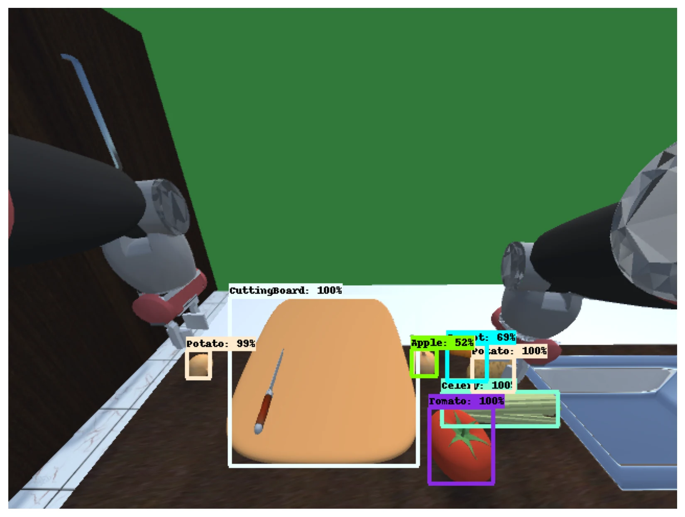

Find kitchen objects
I trained and exported a Faster R-CNN ResNet-101 detector, then converted candidate detections into class and normalized bounding-box features. The detector produced visualized object proposals, including the example below.
Multimodal HRI · exploratory investigation · 2022–23
Can speech and gesture help a robot identify a kitchen object and predict a demonstrated motion?
I implemented a language–vision imitation-learning prototype on NatSGD demonstrations, then explored two ways to incorporate gesture: as controller context and as a separate object-grounding signal. The prototype brings together object detection, language grounding, sequential motion prediction, and exploratory training. Its robot-task performance remains unvalidated.
Research foundation
Stepputtis et al. showed how language can guide visual object attention and closed-loop manipulation. I adapted the semantic pipeline to a different kitchen-task dataset and explored a recurrent state-sequence controller plus gesture conditioning. Their motor-primitive controller and reported success rates belong to the original paper, not this prototype.

Implemented pipeline
The model operates on detector proposals rather than a single undifferentiated image vector. A command selects relevant objects; the resulting scene representation and initial robot state condition a recurrent predictor of a 16-dimensional state sequence.
I trained and exported a Faster R-CNN ResNet-101 detector, then converted candidate detections into class and normalized bounding-box features. The detector produced visualized object proposals, including the example below.
Frozen GloVe word vectors pass through a sentence GRU. Language-conditioned attention weights detected candidates, and the weighted features become a compact scene representation.
An RNN combines the attended scene, command representation, and start state to generate a sequence of 16-dimensional robot states. Later versions change normalization, regularization, and controller depth.

Gesture experiments
Speech can name an object, while a gesture can narrow the intended referent. I implemented two architectural tests of that idea; the available logs do not show a matched language-only versus gesture-enabled performance comparison.
Two GRU layers encode the gesture sequence. The resulting embedding joins the language-grounded scene and initial state before recurrent trajectory prediction. This tests whether gesture information can influence the motion representation directly.
Implemented The model ran forward passes; an isolated benefit from gesture was not established.
A separate attention network uses the gesture encoding to weight detected objects. Its attended scene vector joins the language-attended vector before the controller. This variant is closer to the question of which object a gesture refers to.
Executed An exploratory training run completed, with gradient warnings that limit interpretation.
What the records establish
The prototype demonstrates implemented components and exploratory training. Generalization, gesture ablations, and closed-loop task success remain open.
| Claim | Observed evidence | Boundary |
|---|---|---|
| Kitchen-object detector | Training invocation, model export, and visualized detections | No reliable held-out mAP reported in the inspected cells |
| Language-conditioned policy | Model summaries, tensor outputs, and sequential predictions | A forward pass does not establish meaningful task execution |
| Gesture extensions | Direct embedding and separate attention variants; one saved training run | No clean gesture ablation; missing-gradient warnings in attention variant |
| Optimization and checkpoints | Custom losses, training output, logging, and save routines | Printed training loss is not held-out success |
| ROS 2 deployment | An exploratory ROS 2 service implementation | Interface mismatch with the later policy; no verified rollout |
The dataset pairs speech and gesture with synchronized robot demonstrations in kitchen tasks. The public dataset project describes multiple camera views, robot-view RGB and depth, and instance and semantic segmentation. Snehesh Shrestha, who mentored this work, and co-authors at UMD created this dataset; the dataset and publication are credited to the full author team.
I started with language-conditioned object grounding and trajectory prediction, then tested gesture as controller context and as a separate object-attention signal. The two gesture designs explore different ways to connect human intent to robot motion.
Technical retrospective
A multimodal policy needs supervision aligned to the same object and valid motion interval that the model actually sees. The most useful next experiment is therefore a controlled grounding and closed-loop comparison, not a larger architecture alone.
Training labels use fixed dataset object columns, while attention predicts over detector candidates. Verify the per-example identity-to-proposal mapping before interpreting attention loss.
Mask padded trajectory timesteps, normalize each state dimension appropriately, retain optimizer state across batches, and resolve the gesture branch's missing gradients.
Test language-only, gesture-only, and combined models on participant/task-disjoint splits; report object grounding, valid-step trajectory error, and separate closed-loop task success.
I built the implementation. The dataset made the question possible.
I implemented the detector, language–vision policy, recurrent trajectory predictor, training pipeline, and both gesture variants. Snehesh Shrestha provided the NatSGD dataset; its publication credits Snehesh Shrestha, Yantian Zha, Saketh Banagiri, Ge Gao, Yiannis Aloimonos, and Cornelia Fermüller.
Research boundary. This exploratory study did not produce a demonstrated robot-task success rate. Results from the language-conditioned base paper and published NatSGD benchmarks remain attributed to their respective authors.
Shrestha, S., Zha, Y., Banagiri, S., Gao, G., Aloimonos, Y., and Fermüller, C. “NatSGD: A Dataset with Speech, Gestures, and Demonstrations for Robot Learning in Natural Human-Robot Interaction.” arXiv:2403.02274, 2024.Stepputtis, S., Campbell, J., Phielipp, M., Lee, S., Baral, C., and Ben Amor, H. “Language-Conditioned Imitation Learning for Robot Manipulation Tasks.” NeurIPS, 2020.